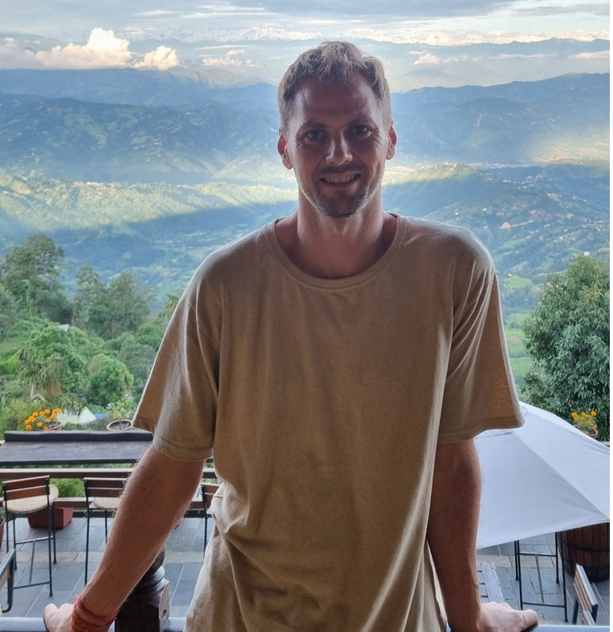

Vil du lage mobilspill sammen med en erfaren mentor?
Jeg er på jakt etter 1–2 studenter som ønsker å lage hypercasual mobilspill ved hjelp av AI-drevet utvikling ("vibecoding"). Dette er et eksperimentelt, kreativt og praktisk samarbeid hvor du lærer masse og har mulighet til å tjene penger på ekte spill som blir lansert.
Jeg tror AI-assistert koding er fremtiden, og dette prosjektet er en unik mulighet til å lære hvordan man utnytter disse verktøyene til sitt fulle potensial i praksis.
Hva jeg tilbyr
- Mentoring fra en erfaren utvikler med doktorgrad i nevrovitenskap og 6+ års erfaring med apputvikling ved UiO
- Har erfaring og har lansert to apper på App Store
- Idéer og spillkonsepter å jobbe med
- Jeg dekker alle kostnader for verktøy, publisering og markedsføring
- Inntektsdeling og felles eierskap på spillene vi lager
- En sterk referanse til din fremtidige CV
Hva vi gjør
Vi utvikler små, enkle og morsomme mobilspill – gjerne flere – ved hjelp av AI og raske iterasjoner. Du vil lære om spilldesign, utvikling, publisering og hvordan man bygger noe som faktisk kan havne på App Store eller Google Play. Inntekter vil kunne komme fra reklame og in-app-purchases.
Vi møtes 1–5 ganger i uken, enten fysisk eller online, avhengig av hvor vi er i prosessen og hva som passer.
Inntektsdeling: Vi starter med 50/50 som utgangspunkt, men dette kan tilpasses underveis etter innsats, ansvar og prosjektets størrelse. Jeg er opptatt av å være rettferdig og raus – men jeg ser også på meg selv som en essensiell katalysator for prosjektet og forventer en betydelig andel.
Rettigheter og eierskap
Vi avtaler delt eierskap på det vi lager sammen. Hvis noen trekker seg underveis, avtaler vi hvordan vi løser det – enten med delt fortsatt eierskap, eller at eierskap til koden overføres. Dette avtales konkret for hvert prosjekt.
Viktig å vite
- Dette er ikke en vanlig jobb – det er et lærings- og utviklingssamarbeid.
- Det finnes ingen garanti for suksess eller inntekter, men det er masse potensial.
- Du får en rå CV-linje og en personlig referanse fra meg.
Interessert?
Send meg en e-post med litt info om deg selv og hvorfor dette høres spennende ut. Du bør selge deg inn så godt du kan – jeg ser etter folk som:
- Er selvstendige og gode til å løse problemer
- Jobber strukturert og steg for steg for å utvikle et spill
- Har en relativt god forståelse for (eller talent for å lære) hvordan man prompt-er AI steg for steg for å lage et produkt
- Tenker logisk, systematisk og analytisk
- Er lidenskapelige for spill og har erfaring som mobilspiller
- Har egne idéer til funksjoner og innhold i spill, og kan drive utviklingsprosessen selvstendig
- Gjerne har en viss forretningsteft og forståelse for hva som kan fungere i dagens marked
Du trenger ikke kunne alt fra før – det viktigste er at du har evner og vilje til å lære. Jeg vil selvfølgelig bidra og hjelpe deg videre om du står fast i prosessen.
Søk her via Google-skjema
